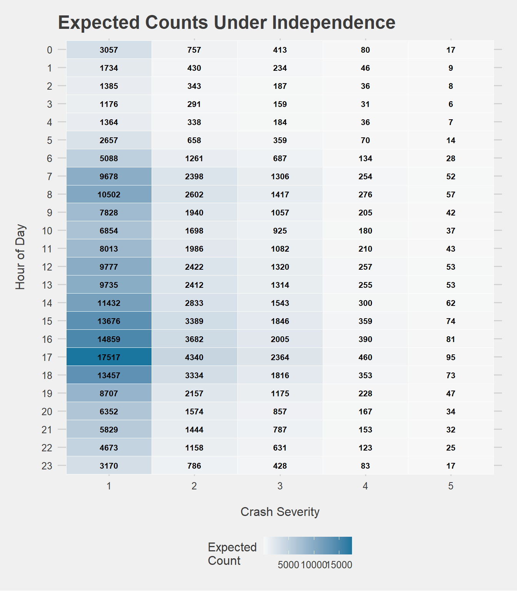
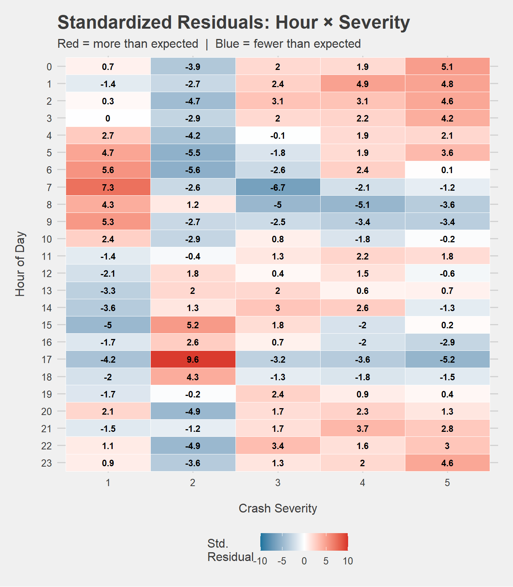
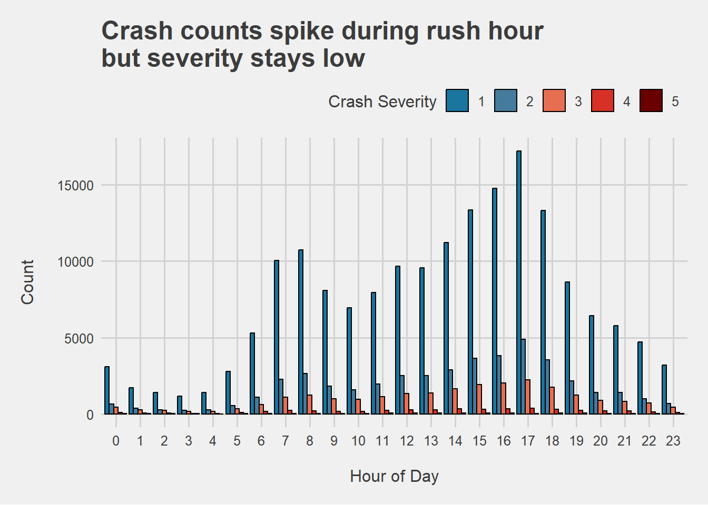
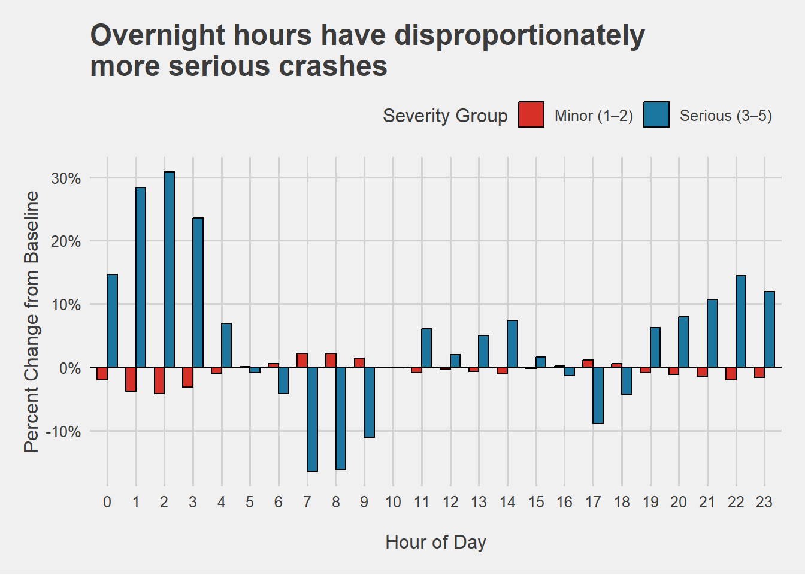

| Test | Statistic | df | P Value |
|---|---|---|---|
| Pearson’s Chi-squared | 868.68 | 92 | 1.099e-126 |
Chi-Squared Test: Hour of Day vs. Crash Severity
Background
Warning
This analysis includes data on traffic crashes, including serious injuries and fatalities.
Data is taken from the Utah Crash Data 2020 dataset, which contains all reported crashes in the state of Utah. Two variables are examined:
Hour of Day: The hour in which a crash occurred, derived from the recorded crash timestamp (0–23).
CRASH_SEVERITY_ID: The severity of the crash on a scale of 1 to 5, where 1 represents property damage only and 5 represents a fatal crash.
Note
Assumption Note: A standard chi-squared test of independence assumes observations are independent. Hours of the day are inherently sequential and crash rates at adjacent hours are correlated. This assumption is acknowledged as violated — results should be interpreted as exploratory rather than strictly inferential.
Question
Is there a significant association between the hour of day a crash occurs and the severity of that crash?
The hypotheses are defined as:
\[H_0: \text{Hour of day and crash severity are independent.}\]
\[H_a: \text{Hour of day and crash severity are associated.}\]
The level of significance for this study is set at \(\alpha = 0.05\).
Analysis
Running the Chi-Squared test below yields a test statistic of 868.68 and a p-value of < 0.0001. This means that hour of day and crash severity are associated. The tables and charts below try to identify how the two factors are associated.
| 1 | 2 | 3 | 4 | 5 | |
|---|---|---|---|---|---|
| 0 | 3078 | 662 | 450 | 97 | 37 |
| 1 | 1703 | 379 | 269 | 78 | 24 |
| 2 | 1392 | 265 | 227 | 55 | 20 |
| 3 | 1175 | 246 | 182 | 43 | 17 |
| 4 | 1418 | 268 | 183 | 47 | 13 |
| 5 | 2787 | 532 | 326 | 85 | 28 |
| 6 | 5301 | 1083 | 624 | 161 | 28 |
| 7 | 10056 | 2284 | 1083 | 221 | 44 |
| 8 | 10732 | 2654 | 1243 | 194 | 31 |
| 9 | 8077 | 1835 | 981 | 158 | 21 |
| 10 | 6962 | 1592 | 949 | 156 | 36 |
| 11 | 7948 | 1970 | 1120 | 241 | 55 |
| 12 | 9665 | 2502 | 1332 | 280 | 49 |
| 13 | 9565 | 2500 | 1381 | 265 | 58 |
| 14 | 11229 | 2894 | 1651 | 343 | 52 |
| 15 | 13373 | 3655 | 1916 | 323 | 76 |
| 16 | 14753 | 3819 | 2036 | 352 | 56 |
| 17 | 17229 | 4888 | 2225 | 387 | 47 |
| 18 | 13333 | 3552 | 1766 | 321 | 61 |
| 19 | 8624 | 2149 | 1250 | 242 | 50 |
| 20 | 6442 | 1399 | 905 | 196 | 42 |
| 21 | 5766 | 1403 | 830 | 198 | 47 |
| 22 | 4711 | 1007 | 711 | 140 | 40 |
| 23 | 3198 | 695 | 454 | 101 | 36 |


This is the base counts of the two factors. It is noted that severity 1 crashes dominate at every hour — minor property-damage crashes make up the vast majority of all reported incidents regardless of time of day. However, the composition of severity across hours is what this analysis is sensitive to.
Code
ggplot(data_long, aes(x = factor(hour), y = n, fill = CRASH_SEVERITY_ID)) +
geom_col(position = "dodge", color = "black") +
labs(
title = "Crash counts spike during rush hour\nbut severity stays low",
x = "Hour of Day",
y = "Count",
fill = "Crash Severity"
) +
theme_fivethirtyeight() +
scale_fill_manual(
values = c("#1A759F", "#457B9D", "#E76F51", "#D73027", "#6B0000")
) +
theme(
axis.title.x = element_text(margin = margin(t = 15)),
axis.title.y = element_text(margin = margin(r = 15)),
legend.position = "top",
legend.justification = "right"
)
Code
overall_props <- crash_counts |>
mutate(
SeverityGroup = if_else(
CRASH_SEVERITY_ID %in% c("1", "2"),
"Minor (1–2)",
"Serious (3–5)"
)
) |>
group_by(SeverityGroup) |>
summarise(total = sum(n), .groups = "drop") |>
mutate(overall_pct = total / sum(total) * 100)
interpretable <- crash_counts |>
mutate(
SeverityGroup = if_else(
CRASH_SEVERITY_ID %in% c("1", "2"),
"Minor (1–2)",
"Serious (3–5)"
)
) |>
group_by(hour, SeverityGroup) |>
summarise(n = sum(n), .groups = "drop") |>
group_by(hour) |>
mutate(pct = n / sum(n) * 100) |>
ungroup() |>
left_join(
overall_props |> select(SeverityGroup, overall_pct),
by = "SeverityGroup"
) |>
mutate(freq = (pct - overall_pct) / overall_pct * 100)
ggplot(interpretable, aes(x = factor(hour), y = freq, fill = SeverityGroup)) +
geom_col(position = "dodge", color = "black", width = 0.7) +
geom_hline(yintercept = 0, color = "black", linewidth = 0.5) +
labs(
title = "Overnight hours have disproportionately\nmore serious crashes",
x = "Hour of Day",
y = "Percent Change from Baseline",
fill = "Severity Group"
) +
scale_y_continuous(
breaks = seq(-20, 60, 10),
labels = paste0(seq(-20, 60, 10), "%")
) +
theme_fivethirtyeight() +
scale_fill_manual(values = c("#D73027", "#1A759F")) +
theme(
axis.title.x = element_text(margin = margin(t = 15)),
axis.title.y = element_text(margin(r = 15)),
legend.position = "top",
legend.justification = "right"
)
Conclusion
Because the p-value from the Chi-Squared test was far below \(\alpha = 0.05\), there is sufficient evidence to reject the null hypothesis in favor of the alternative that hour of day and crash severity are associated.
That said, with over 252,000 crashes in the dataset, the p-value is essentially guaranteed to be significant — even trivial deviations from independence will produce an enormous test statistic at this sample size. The more useful question is where the deviations are, which the residuals answer.
The most striking finding is the contrast between rush hour and overnight. During the morning commute onset — particularly hour 7 — severity 1 crashes are vastly overrepresented (residual +7.3) and severity 3 crashes are the most suppressed in the entire table (−6.7). High-volume, low-severity fender-benders define this window. By contrast, hours 1 through 3 show the opposite: severity 4 and 5 crashes are significantly overrepresented despite far fewer total crashes. This makes intuitive sense — late-night driving tends to involve higher speeds, impairment, and less traffic to absorb impact.
Hour 17 produces an interesting result of its own: severity 2 is the single most overrepresented cell in the entire table (+9.6). The evening rush generates a disproportionate share of moderately injurious crashes compared to both the overnight and midday windows.
One thing that is difficult to fully untangle here is the role of exposure. More crashes happen during rush hour simply because more people are driving. Whether rush hour is genuinely safer per trip, or just produces different severities due to lower speeds, is a question this data alone can’t fully answer. Further analysis controlling for traffic volume would be needed to separate those effects.